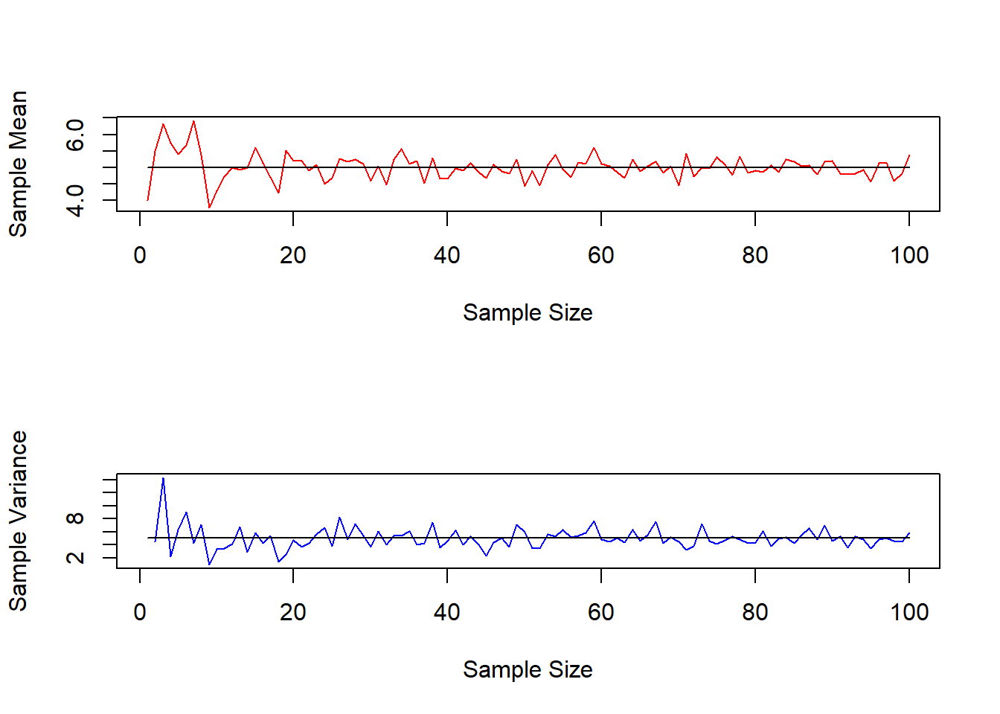
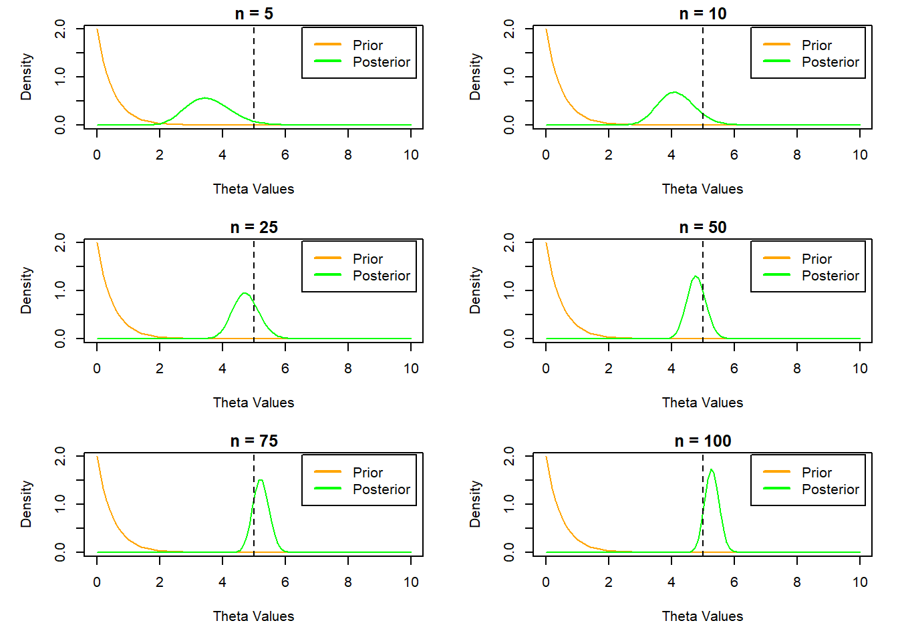
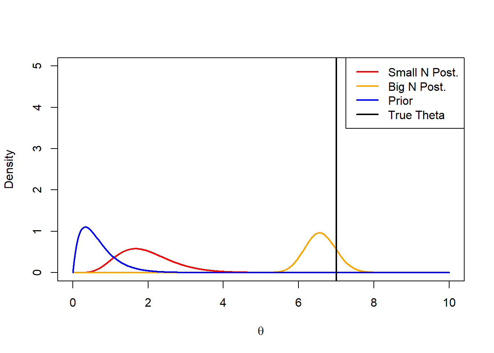
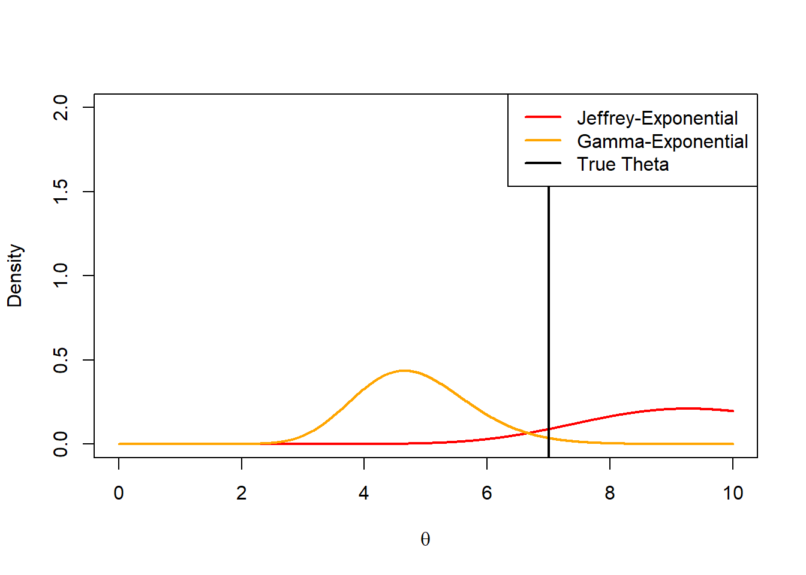

A conjugate distribution refers to a pair of sampling and prior distributions where the posterior distribution is of the same family as the prior distribution. A family of distributions implies a set of distributions which have a similar form and only differ in the values of their parameters.
Conjugate distributions play a big role in Bayesian analyses as they greatly simplify model formulations. After selecting a plausible sampling distribution, selecting a conjugate prior ensures that the posterior distribution is easy to derive and is tractable. The only other way for the posterior to be tractable is if the explored parameter space is finite AND discrete. Posteriors that do not match these two cases have to be approximated (either by sampling processes or variational inference).
In the previous document, we saw an example of a conjugate pair: the beta and binomial distributions.
4.0.1 One-parameter conjugate models
4.0.1.1 Poisson-gamma model
A Poisson distribution is a discrete distribution which can take all positive integer values. It is often used to model counts, such as points in a sport or the number of daily customers in a store. The distribution has the following properties:
\[
\mathbb{E}[Y] = Var[Y] = \theta
\]
n <-100theta <-5set.seed(123)mean_estimate <-c()var_estimate <-c()for (i in1:n){ y <-rpois(i,theta) mean_estimate <-c(mean_estimate,mean(y))var_estimate <-c(var_estimate,var(y))}par(mfrow =c(2,1))plot(1:n,mean_estimate,col ='red',type ='l',xlab ='Sample Size',ylab ='Sample Mean')lines(1:n,rep(theta,n),col ='black')plot(1:n,var_estimate,col ='blue',type ="l",xlab ='Sample Size',ylab ='Sample Variance')lines(1:n,rep(theta,n),col ='black')

As we can see, with sufficient sample size, the mean and variance are both similar to the \(\theta\) used to generate the counts.
Now, we can make use of Bayesian analysis to infer this theta using the data. If we assume that each count is independently and identically distributed (which they are), we can model then as Poisson random variables.
Since the rate parameter of the Poisson can take on any positive real number, the parameter should be sampled from a distribution that covers a similar range. In this case (and given that we know it is a conjugate prior for the Poisson distribution), we can use the Gamma distribution where
\[
\theta \sim Gamma(\alpha,\beta)
\]
This ensures that \(\theta\) is sampled from a distribution which covers all non-negative real numbers and that allows for the derivation of a closed-form prior. We can now estimate the posterior for \(\theta\) :
We notice that the current formulation is similar to the gamma distribution with parameters \(\alpha_n = \alpha + s_n\) and \(\beta_n = \beta + n\) . Therefore, the posterior is:
\[
\Theta|Y \sim Gamma(\alpha + s_n,\beta + n )
\]
a <-1b <-2theta <-seq(0,10,length =100)par(mfrow =c(3,2),mar =c(5, 5, 1.5, 1.5))for (i inc(5,10,25,50,75,100)){ prior <-dgamma(theta,shape = a, rate = b) posterior <-dgamma(theta,shape = a +sum(y[1:i]), rate = b + i)plot(theta,prior, type ='l', col ='orange', xlab ='Theta Values',ylab ='Density',main =paste('n = ',i,sep =''))lines(theta,posterior,col ='green')abline(v =5, lty =2)legend('topright', inset = .02, legend =c('Prior', 'Posterior'),col =c('orange', 'green'), lwd =2)}

We can see that as the sample size increases, the posterior density peaks near the true \(\theta\) value.
4.0.1.2 Prediction with Poisson-Gamma Model
As seen in the last document, we can the compute a posterior predictive distribution to predict the probability of the next unobserved value given the observed counts. For the sake of brevity, I will not cover it here (but all the material required is present in the beta-binomial example!).
4.0.2 Prior Distributions
As seen in the derived posteriors, the choice of the prior not only affects our derivation of the posterior, but can also influence the posterior probability. This is particularly true when the sample size is small. It is therefore imperative to select an appropriate prior that correctly guides the posterior distribution given what we know about the data. This is known as an informative prior which will help make the solution more stable and accurate at small sample sizes by helping restrict the sampling of the parameters for the sampling distribution to a range of plausible values. For the model described above, the gamma is a suitable prior as it ensures that the \(\theta\) parameter sampled for use in the Poisson distribution is always non-negative, as is required.
There are many cases where we may not know enough about the data-generating process to make reliable assumptions on the prior’s form. In this case, we would prefer to use a non-informative prior B which will not influence the downstream posterior distribution. A logical option here would be the uniform distribution which sets an equal probability for all values within a range. This however can lead to two key issues:
Uniform is limited to a finite range of values. If the true parameter estimate can be any real number, we would not be able to use a proper distribution and provide each value with an equal probability. This can be resolved by using a constant for each value on a non-finite range, but the use of an improper distribution is not always desirable.
Although the uniform distribution is non-informative, it is possible that a re-parameterization of the sampled parameters can become informative, making it impractical for certain use cases.
As a result, a novel form of non-informative prior can be used, which is robust to re-parameterization - The Jeffrey’s Prior. The key advantage of this prior is that it applies to an infinite domain, and remains un-informative after changing the parameterization. We can look at the concept below.
Let’s assume that we are modeling observations \(Y_i \sim Exponential(\theta)\) and use \(Gamma(\alpha,\beta)\) as a prior. Skipping the derivation, we have the following equation for the posterior of \(\theta\) :
\[
\Theta|Y \sim Gamma(\alpha + n,\beta + s_n)\]
Where \(s_n = \sum_{i =1}^ny_i\). We can see that for a small \(n\), the posterior distribution will closely resemble the prior.
a <-2b <-3theta <-sample(1:10,1)n <-5y <-rexp(n,theta)sn <-sum(y)bign <-250big_sn <-sum(rexp(bign,theta))theta_seq <-seq(0,10,by =0.01)plot(theta_seq,dgamma(theta_seq,a + n,b + sn),type ='l',col ='red',xlab =expression(theta),ylab ='Density',lwd =2,ylim =c(0,5))lines(theta_seq,dgamma(theta_seq,a + bign,b + big_sn), col ='orange',lwd =2)lines(theta_seq,dgamma(theta_seq,a,b), col ='blue',lwd =2)abline(v = theta,lwd =2)legend('topright', legend =c('Small N Post.','Big N Post.','Prior','True Theta'), col =c('red','orange','blue','black'),lwd =2)

As we can see, the choice of the prior will influence the posterior until enough samples have been collected. If the prior distribution is not chosen correctly (as is the case here), we can see that a large number of samples are needed before we converge to the true estimate.
The non-informative prior however, will help us avoid this and entirely drive the posterior distribution by the observations with no risk of selecting a misleading prior.
4.0.2.1 Jeffrey’s Prior
The key issue with the uniform distribution as a prior is that in the case of reparemeterization of the target parameter \(\theta\) such that \(\phi = g(\theta)\) we have that
\[\pi_{0,\theta}(\theta) = c \rightarrow \pi_{0,\phi}(\phi) = c \times J(\theta \rightarrow \phi) \]
Where \(J(\theta \rightarrow \phi)\) is the Jacobian of the transformation. This implies that there is no guarantee that reparameterizing the uniform prior will retain the non-informative behavior. The jeffrey’s prior is defined using the following structure for the prior: \[
\pi_0(\theta) \propto |\mathcal{I}_\theta(\theta)|^{\frac{1}{2}}
\]
Where \(\mathcal{I}_\theta(\theta)\) is the Fisher Information of the pdf. The Fisher Information can be represented as the negative expectation of the second derivative of the log-pdf. In practice, for k parameters \((\theta_1,…,\theta_k)\) , the fisher Information will take the form of a \(k \times k\) matrix (REVIEW). In practice, we can see that any transformation of \(\theta\) will give the same value for the Jeffrey’s prior.
We can then apply this to our example with the Exponential pdf.
This form matches the gamma pdf with \(\alpha_n = n\) and \(\beta_n = s_n\). Leading to the following posterior:
\[
\Theta|Y \sim Gamma(n,s_n)
\]
Which depends entirely on the observed data. We can see how this affects our modeling below.
n <-25y <-rexp(n,theta)sn <-sum(y)theta_seq <-seq(0,10,by =0.01)plot(theta_seq,dgamma(theta_seq,n,sn),type ='l',col ='red',xlab =expression(theta),ylab ='Density',lwd =2,ylim =c(0,2))lines(theta_seq,dgamma(theta_seq,a + n,b + sn), col ='orange',lwd =2)abline(v = theta,lwd =2)legend('topright', legend =c('Jeffrey-Exponential','Gamma-Exponential','True Theta'), col =c('red','orange','black'),lwd =2)

We can see that at a smaller sample size, the jeffrey’s prior-based model is much closer to the true value than the misleading prior. We therefore see the advantage of using a non-informative prior when we are not confident in our choice of a prior. However, it is important to note that this will not outperform a well chosen prior.